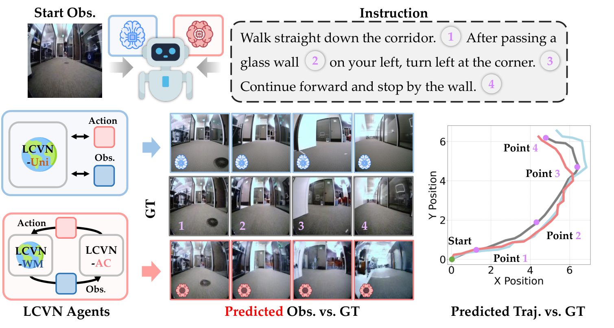
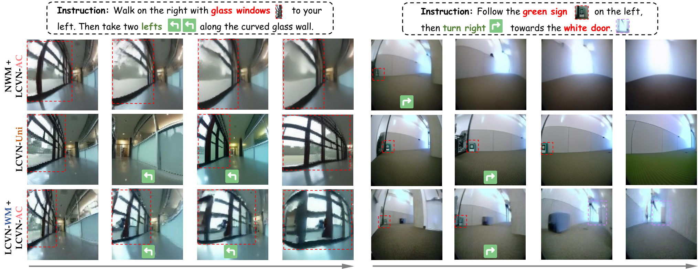
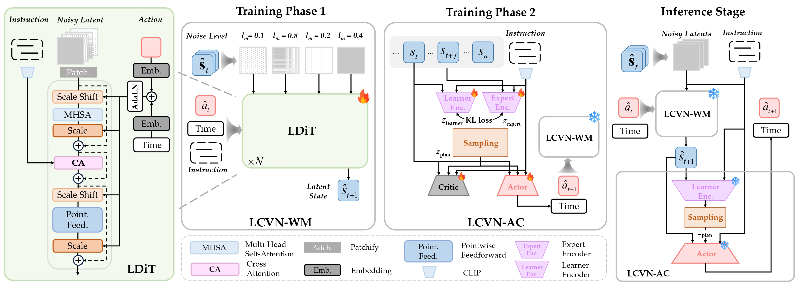

Affiliated with the RoboPAD Workshop at NeurIPS 2026.

👋 Welcome to Track #1: WorldNav of the RoboWorld Challenge 2026!
World models enable embodied agents to imagine how a scene may evolve in response to their actions and use those predictions to guide planning. For language-conditioned navigation, this means connecting what an agent sees and what it is asked to do with the future states it expects to encounter.
WorldNav explores this capability in an open-loop setting: given a single egocentric RGB observation and a natural-language instruction, an agent must generate a complete navigation trajectory without a goal image or intermediate environmental feedback.
🏆 Awards: Official Certificates of Recognition for the Top 5 teams and oral presentations at the RoboPAD Workshop at NeurIPS 2026.
WorldNav invites participants to develop world-model-based or vision-language-action (VLA) agents for language-conditioned visual navigation. Given a single initial egocentric RGB observation and a natural-language instruction, the agent must generate the full future navigation trajectory without a goal image or intermediate environmental feedback.
The track encourages methods that couple imagination with control: world models that predict future observations to guide action selection, unified autoregressive models that interleave observation and action prediction, and VLA models that map vision and language to navigation actions. Policy-only methods are also welcome.
| Component | Description |
|---|---|
| Input | One initial egocentric RGB image and one natural-language instruction. |
| Output | A variable-length sequence of robot-relative forward, leftward, and yaw updates. |
| Termination | The agent decides when the trajectory ends; the submitted action sequence is scored as a whole. |
| Setting | Open-loop generation: no goal image or intermediate environmental feedback is available. |
Submit ordered [dx, dy, dyaw] triples: dx means forward motion, dy means leftward motion in the agent's current frame, and dyaw changes its heading. The private evaluator starts from the recorded initial pose; participants receive no test pose or goal. See the submission format for details.
Agents may generate the trajectory autoregressively, using their own predicted future observations or states to plan subsequent actions. The instruction remains the navigation goal throughout the rollout.

Official challenge awards are aligned with the RoboWorld 2026 Awards & Recognition:
| Phase | Evaluation data | Leaderboard |
|---|---|---|
| Phase 1: Validation | Released val_seen and val_unseen splits | Ranked by the mean of the val_seen and val_unseen Scores (50% each). Both split files are required. |
| Phase 2: Final Evaluation | Held-out test split | Ranked by the test Score. |
Phase 1 supports method development and validation; it does not determine shortlisting, final rankings, or awards. Final rankings and awards are determined entirely by the Phase 2 test Score. Scores from the two phases are not combined. Phase 1 reports both split Scores and ranks by their equal-weight mean.
| Event | Date |
|---|---|
| Team registration opens (Google Form) | October 08, 2026 |
| Phase 1: Validation opens | October 15, 2026, 00:00 UTC |
| Phase 1 closes / Phase 2 opens | October 30, 2026, 23:59 UTC |
| Final submission deadline (Phase 2) | November 30, 2026, 23:59 UTC |
| Awards announcement | December 12, 2026 (RoboPAD Workshop @ NeurIPS 2026) |
See the CodaBench competition page for the exact Phase 2 opening and closing times and schedule updates.
The track uses the LCVN dataset, comprising 39,016 trajectories and 117,048 human-verified instructions sourced from Go Stanford, ReCon, SCAND, HuRoN, and TartanDrive.
Each trajectory is paired with three instruction styles:
| Split | Trajectories | Instructions | Use |
|---|---|---|---|
| Train | 28,813 | 86,439 | Training |
| Validation Seen | 3,602 | 10,806 | In-domain validation |
| Validation Unseen | 1,500 | 4,500 | Unseen-domain validation |
| Test | 5,101 | 15,303 | Final evaluation |
| Total | 39,016 | 117,048 |
Go Stanford, ReCon, SCAND, and HuRoN provide the training and in-domain evaluation data. The unseen validation split is drawn exclusively from TartanDrive. The test split contains trajectories from both TartanDrive and in-domain sources. The training and validation splits are available on Hugging Face. Phase 2 provides the test inference inputs: initial RGB observations and language instructions. Reference test trajectories and target annotations remain withheld for official evaluation.
Two complementary LCVN approaches serve as the reference baselines:
| Baseline | Approach |
|---|---|
| LCVN-Uni | A unified autoregressive multimodal model fine-tuned from Anole-7B that jointly predicts the next action and next observation in a single forward pass. |
| LCVN-WM + LCVN-AC | A language-conditioned diffusion world model paired with an actor-critic agent trained entirely in the world model's latent space using intrinsic rollout rewards. |

Implementations and usage instructions are provided in the LCVN repository. See the LCVN paper for details.
Submissions are evaluated against one recorded trajectory using Success Rate (SR), Absolute Trajectory Error (ATE), Relative Pose Error (RPE), Full-route fidelity, and Heading and turn fidelity.
| Metric | Direction | Description |
|---|---|---|
| SR | Higher is better | Fraction of episodes whose final predicted position meets the reference endpoint criterion. |
| ATE | Lower is better | Global trajectory accuracy, measured by the Euclidean distance between aligned predicted and reference poses. |
| RPE | Lower is better | Local trajectory consistency, measured by discrepancies in relative motion between consecutive predicted and reference poses. |
| Full-route fidelity | Higher is better | Agreement with the full ordered reference route, with excess travel penalized. |
| Heading and turn fidelity | Higher is better | Facing agreement while moving and agreement of the direction, place and amount of turns. |
SRᵢ is binary success; ATEᵢ and RPEᵢ are per-episode errors in dataset coordinate units. Score averages episode contributions. See demonstration.py for the five metric calculations.
| Resource | Link |
|---|---|
| Challenge Website | RoboWorld 2026 |
| Official Track 1 Website | RoboWorld 2026 — Track 1: WorldNav |
| Track 1 Repository | worldnav-challenge |
| Evaluation & Leaderboard | CodaBench #18185 |
| Dataset | LCVN on Hugging Face |
| Baseline Implementation | LCVN Repository |
For technical support, use GitHub Issues.
For event and registration questions, email roboworld2026@gmail.com.
1. Do I have to use a world model?
No. World-model agents, VLA models, and policy-only methods are all eligible. The track particularly encourages approaches that use predicted future states to guide planning.
2. Do I need to run a simulator or submit executable agent code?
No simulator or executable agent code is required for the scored submission. Upload the prediction files described in the track repository; the evaluation server scores the submitted trajectories.
3. Can the agent receive new observations during inference?
Only the initial RGB observation and the instruction are provided. The agent may generate and use its own predicted future observations, but it cannot access intermediate observations from the environment.
4. Are test annotations available?
No. Phase 2 provides the initial observations and instructions needed for inference. Reference test trajectories and target annotations remain withheld.
5. Which episodes must my submission include?
Include every episode in the official manifest exactly once. Phase 1 requires 10,806 val_seen episodes and 4,500 val_unseen episodes, covering the three instruction styles. Copy episode identifiers directly from the manifests.
6. What should I do if my submission is rejected?
Compare the archive root, episode IDs, and JSON fields with the downloadable example submission, then read the CodaBench scoring log. A SUBMISSION REJECTED: message identifies a submission issue, such as missing episodes, duplicate identifiers, or an incorrect archive layout. Correct it and resubmit. A SCORING DATA ERROR (organizer): message indicates an organizer-side problem; report it to the competition contact email above.
Participation is governed by the official Terms & Conditions on CodaBench.
If you use the LCVN benchmark or the WorldNav track resources, please cite:
@misc{dong2026languageconditionedworldmodelingvisual,
title = {Language-Conditioned World Modeling for Visual Navigation},
author = {Yifei Dong and Fengyi Wu and Yilong Dai and Lingdong Kong and Guangyu Chen and Xu Zhu and Qiyu Hu and Tianyu Wang and Johnalbert Garnica and Feng Liu and Siyu Huang and Qi Dai and Zhi-Qi Cheng},
year = {2026},
eprint = {2603.26741},
archivePrefix = {arXiv},
primaryClass = {cs.CV},
url = {https://arxiv.org/abs/2603.26741}
}
@misc{roboworld2026track1,
title = {Track 1 | WorldNav: Language-Conditioned World Navigation},
author = {RoboWorld Challenge 2026 Organizers},
year = {2026},
howpublished = {https://f1y1113.github.io/worldnav-challenge/}
}